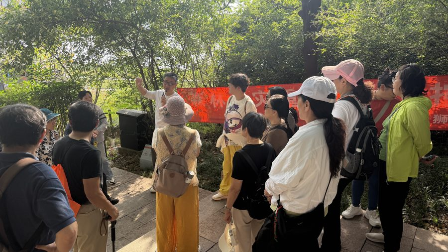
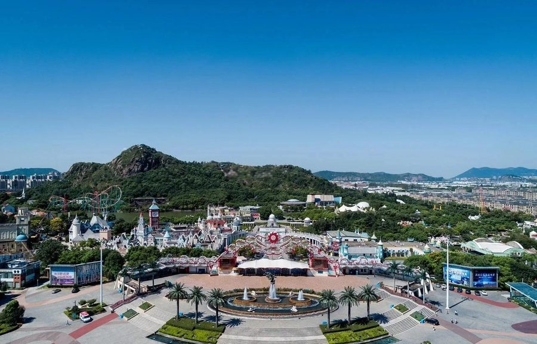
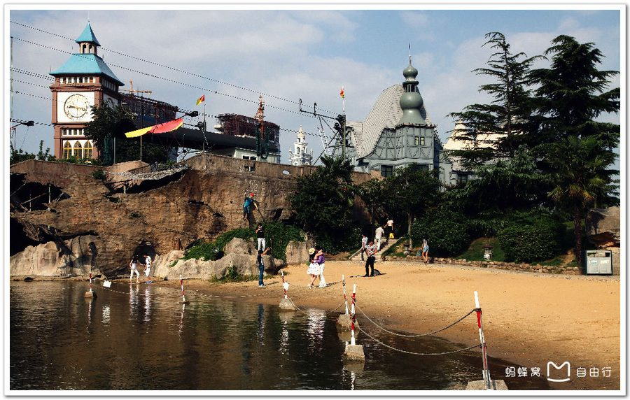

01
狮山脚下一代人的记忆 · 苏州乐园美好回忆



集合先看湖：狮子山的倒影卧在水里，一座 114.5 米的小山，是苏州城西最孤零零、也最热闹的一座山。孤零零是地理——明《姑苏志》专门记了一笔：城西这四座小山「与诸山不相连」；热闹是今天——脚下这片广场，二十年前是全苏州小孩最想去的地方：1997 年苏州乐园欢乐世界在这山脚开园，一句「迪士尼太远，去苏州乐园」苏州人都会背，2017 年 10 月 9 日闭园，2023 年建成狮山公园，2024 年 10 月狮子山、天狮湖全面开放登山。老过山车轨道还留着一截，与苏博西馆、狮山大剧院隔水相望。当年园里那些漂亮的欧式洋房，今天翻出老照片再看，还是很漂亮——上面两张旧影，就是一代人的乐园。
一代人的旋转木马，换成了博物馆和剧院 —— 这叫还山于民。
狮山文化广场占地约 1213 亩：苏博西馆 2021 年 9 月启用，狮山大剧院 2024 年 8 月 31 日开幕，苏州科技馆 2026 年 3 月 20 日开放；「东有金鸡湖，西有狮子山」是官方口径的城市格局语。